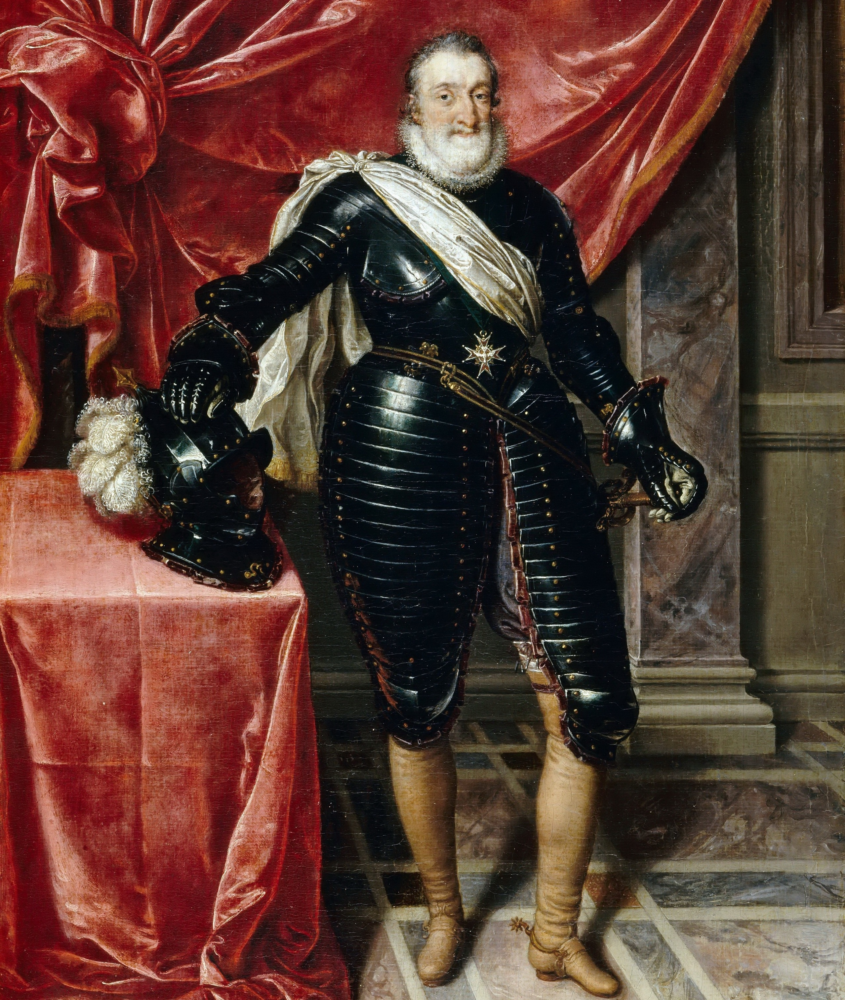
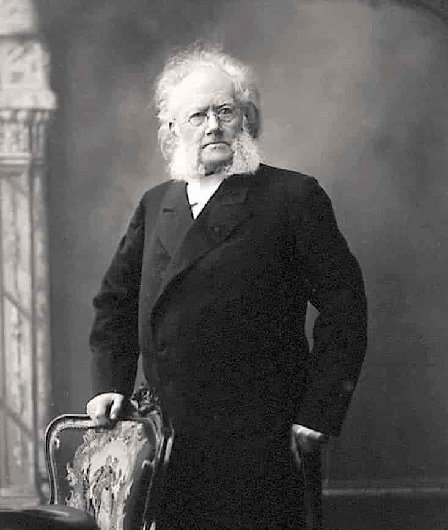
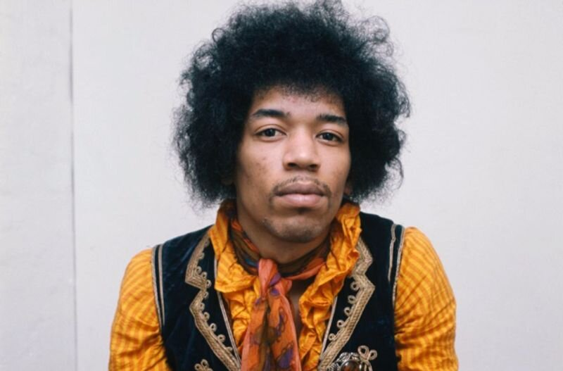

Da Henrik IV var 6 år døde faren etter å ha spist en hjortelever i litt suspekt tilstand. Faren het også Henrik. Henrik IV ble altså monark i en alder av 6 år. Senere kranglet han med paven og ble bannlyst. Henrik utnevnte sine egne antipaver og plyndret på et tidspunkt Roma. Livet til Henrik ble heretter fylt med mye konflikter, opprør og krig med naboland. Til slutt gjorde sønnen hans opprør, også kalt Henrik, og Henrik IV måtte gå av for å ikke bli drept. Å finne moralen i dette avsnittet etterlates som en oppgave til leseren.
Faren hans het også Henrik. Henrik IV, også omtalt som Henrik den Store eller den Gode Henrik, er en erketypisk Henrik. Veldig tolerant. Han prøvde å sette en stopper for religionskrigene mellom protestanter og katolikker som holdt på å rive Frankrike i stykker. Det sies at et godt kompromiss etterlater begge parter rasende. Dette skjedde med Henriks kompromiss, og han ble utsatt for mange mordforsøk av religiøse fanatikere fra begge sider, både katolikker og protestanter. Til slutt ble han knivstukket av en katolikk. Han fokuserte mye av politikken mot å gjøre livet bedre for bønder og folk flest, og er en av Frankrikes mest populære ledere gjennom tidene. Etter napoleonskrigene utviklet det seg en personlighetskult rundt Henrik IV.

Henrik Wergeland
Henrik Wergeland er en temmelig oppskrytt dikter. Han var rival av Welhaven og hadde et forhold med søsteren til Welhaven.
Han er i tradisjonen av romantiske diktere. Han begynte å studere i 1821 og hadde mange ulykkelige kjærlighetforhold. Dette
inspererte ham til å skrive en masse kjærlighetsdikt før han døde av lungekreft i 1845.
Henrik Ibsen
Den største norske Henriken. Fantastiske drama som Villanden og Hedda Gabler fortsetter å imponere elever på videregående den dag i dag. Ettersom målgruppen allerede kjenner Ibsen er det ingen grunn til å gå for nøye til verks her.

Henrik Bohr
Henrik Bohr er den viktigste Henriken av alle tider for sine gjennombrudd i fysikk. Han spilte også fotball som keeper. Bohr ble ferdig med sin banebrytende doktorgrad i 1911, men siden den var skrevet på Dansk tok det en del tid å oppdage at den var banebrytende.
Jimi Hendrix
Alkohol og narkotika gjorde ham veldig hissig. Ifølge vennen Sharon Lawrence: liquor "set off a bottled-up anger, a destructive fury he almost never displayed otherwise". Han ble arrestert for en slåsskamp i Gøteborg, knuste en vodkaflaske mot fjeset til kjæresten og andre ting. En gang ble han også visstnok kidnappet. Han forsvant etter et show for å sniffe kokain med en fremmed. Manageren fikk senere telefon om å gi kontrakten i bytte mot løslatelsen av Hendrix. Manageren nektet men hyrte folk til å finne Hendrix. Merkelig nok ble han så funnet uskadd i en leilighet og det var slutten på den historien. Hendrix var også flink til å spille gitar.

Psst: Bruk venstre og høyre piltast for neste slide:)